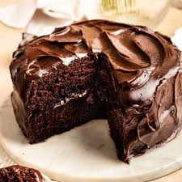

Delicious Chocolate Cake

A rich and moist chocolate cake that will satisfy your sweet cravings.
Ingredients:
- 2 cups all-purpose flour
- 1 3/4 cups granulated sugar
- 3/4 cup unsweetened cocoa powder
- 2 1/2 teaspoons baking powder
- 1 1/2 teaspoons baking soda
- 1 teaspoon salt
- 2 eggs
- 1 cup milk
- 1/2 cup vegetable oil
- 2 teaspoons vanilla extract
- 1 cup boiling water
Instructions:
- Preheat the oven to 350°F (175°C). Grease and flour two 9-inch round cake pans.
- In a large bowl, whisk together flour, sugar, cocoa powder, baking powder, baking soda, and salt.
- Add eggs, milk, oil, and vanilla extract. Mix until smooth.
- Stir in the boiling water. The batter will be thin.
- Pour the batter evenly into the prepared pans.
- Bake for 30 to 35 minutes or until a toothpick inserted into the center comes out clean.
- Let the cakes cool in the pans for 10 minutes, then transfer to wire racks to cool completely.